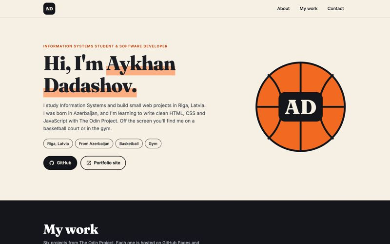
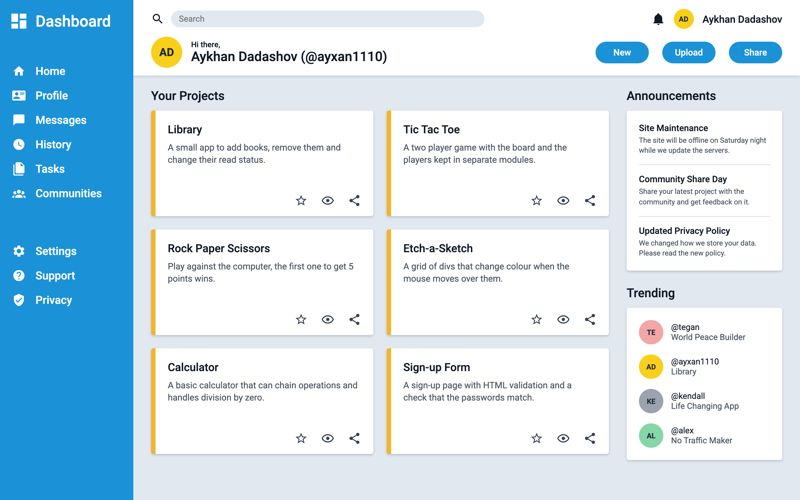
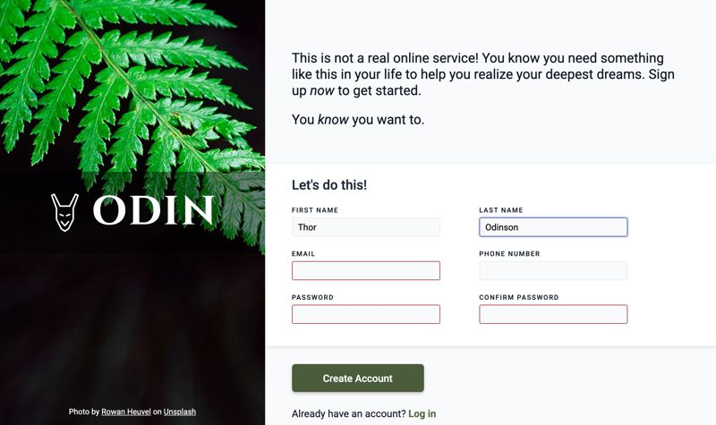
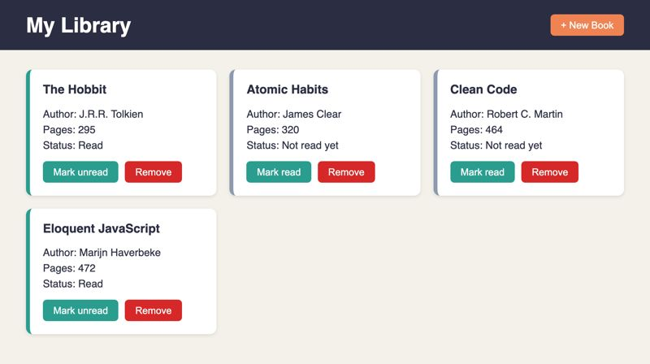
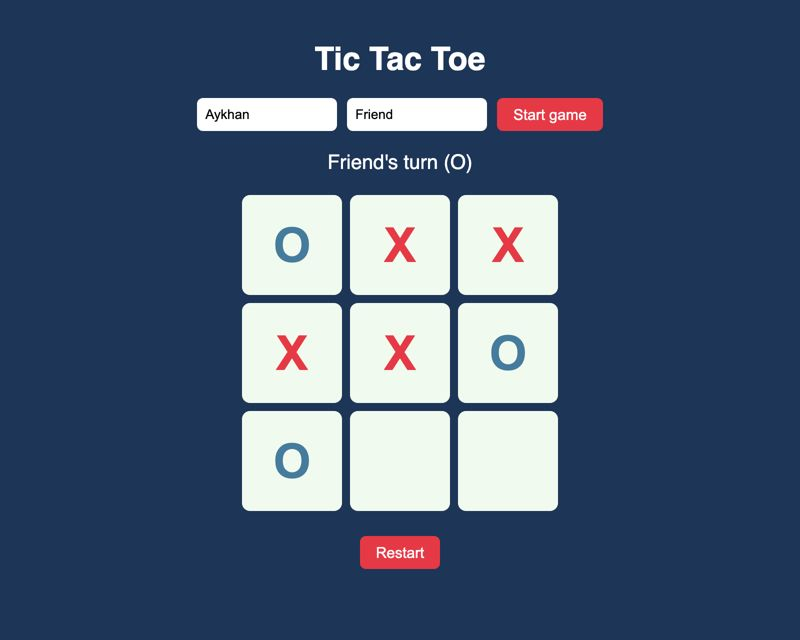
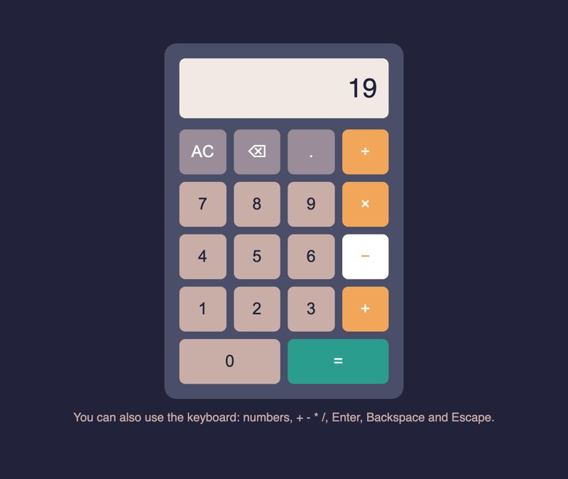
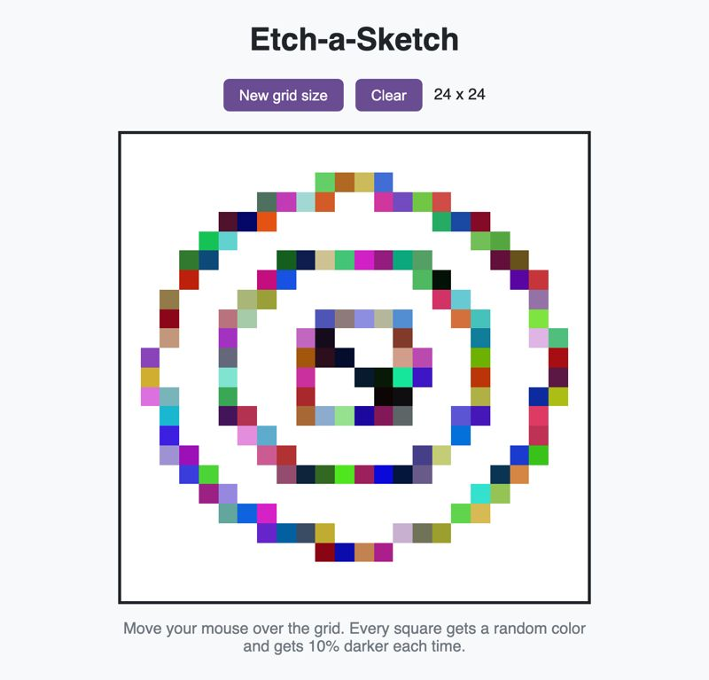
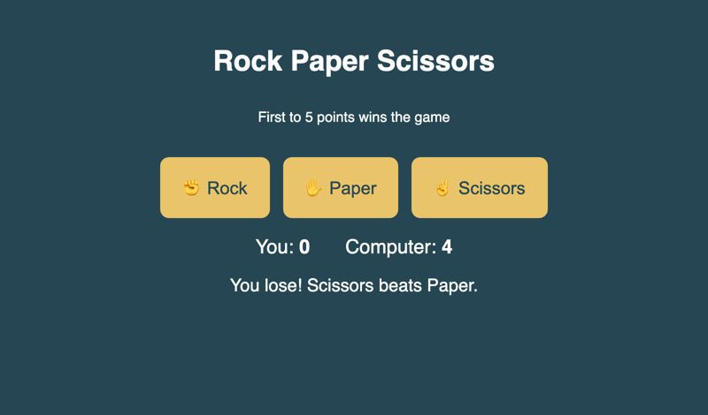

Advanced HTML and CSS
Homepage
A responsive personal homepage with media queries, responsive images and accessible design.
Portfolio
Every project has a live demo and its code on GitHub. The Odin Project ones also have a presentation (PDF or PPTX) where I explain how I built them.

Advanced HTML and CSS
A responsive personal homepage with media queries, responsive images and accessible design.

Intermediate HTML and CSS
A dashboard layout built with CSS Grid and Flexbox.

Intermediate HTML and CSS
A form with HTML validation and a password match check.

JavaScript course
Add, remove and mark books as read. Object constructors and prototypes.

JavaScript course
A two player game made with factory functions and the module pattern.

Foundations
Works with the mouse and the keyboard, without eval().

Foundations
A drawing grid made with DOM manipulation and mouse events.

Foundations
Play against the computer, first to 5 points wins.
React · TypeScript · Tailwind
A project I developed during the Innovate Mobility Summer School in Budapest.
React · Redux Thunk · Tailwind
A single-page application that shows a restaurant menu.
Laravel · PHP · 1st place
Built during the Magebit Web Development Bootcamp in 2025. Won the Best Overall Project award.
jQuery · 2024
My first Tic Tac Toe from 2024, with a score board and winning line animation.